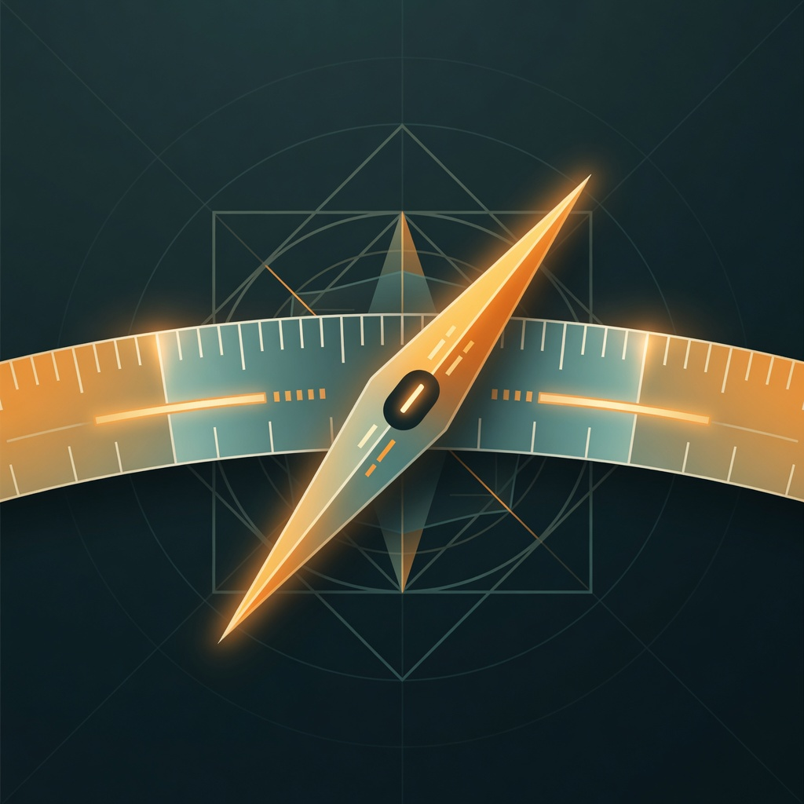
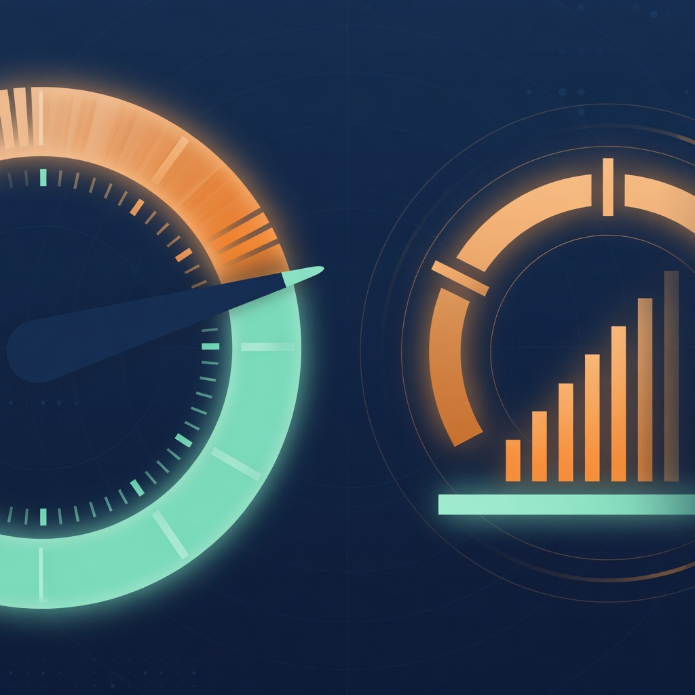

Enhanced
计时 · 导航 · 燃油 · 超速 · 检查清单 · 武器估算
- 完整飞行信息
- 适合全真常用玩家
WINDOWS · OPEN SOURCE · OFFICIAL 8111
Bomana 是面向 War Thunder 全真模式的多功能计时器。自动跟踪 15 分钟收益周期， 并把导航、燃油、超速与投弹估算收进一个可置顶的轻量窗口。
01 · GET STARTED
启动器负责下载、签名校验和版本回退。Bomana 只读取游戏已经提供的本地数据。
从 GitHub Release 获取通用启动器，无需安装 Python。
完整功能选 Enhanced；不需要投弹估算选 Standard；只计时选 Lite。
启动 War Thunder 并进入战斗，Bomana 会自动连接 localhost:8111。
当前 Release 文件
02 · CHANNELS
计时 · 导航 · 燃油 · 超速 · 检查清单 · 武器估算
计时 · 导航 · 燃油 · 超速，不含投弹估算
只保留核心周期计时与基本窗口控制
03 · REAL UI
桌面主窗、独立导航、启动器与网页驾驶舱（桌面 / 手机）均为实机截图。
地图 · 计时 · 武器 / 导航
shots/web-cockpit-desktop.png
本机 / 局域网配对
shots/web-cockpit.png
计时 · 导航 · 武器
shots/desktop-main.png
航向带 · 战区 / 机场
shots/nav-hud.png
通道 · 更新 · 回退
shots/launcher.png
04 · FLIGHT TOOLS
功能围绕全真飞行中的时间、方向、余量和风险组织；没有需要学习的复杂工作区。
识别出生、着陆和离场状态，自动维护 15 分钟周期，临近结束时提醒。

方位、距离、POI 与坠毁点回溯；集成或独立导航窗口。

油量、消耗、返航估算；IAS 与 Mach 分级提示。
自由落体 CCRP、条件包线与可选滑翔参考，共用一张紧凑卡片。均为估算，不是游戏内部算法。
自身导航参考；默认关闭。不显示玩家不可见的敌方情报。
本机或局域网手机查看计时与地图，可操作 Bomana 固定功能，不模拟游戏按键。
05 · PERMISSION
Bomana 先启用普通热键；如果确认游戏也以普通权限运行，就完全不提权。 游戏未启动、权限未知或以管理员运行时，才显示可选授权按钮。
06 · BOUNDARIES
运行时只访问 /indicators、/state、
/map_obj.json 与 /map_info.json，
不读内存、不注入、不改游戏文件。
启动器先验证 Ed25519 清单与 SHA256；GitHub Actions 还为发布文件生成可独立验证的 Artifact Attestations。
匿名统计字段、用途和禁用方式公开；热键 Broker 不联网、不记录按键内容，也不参与统计。
07 · READ MORE
08 · FAQ
机库通常没有完整飞行数据。进入战斗后再试；也可在浏览器访问
http://localhost:8111 确认游戏本地数据页可用。
不需要。Bomana 默认使用普通热键，确认游戏普通运行时不会提示。 只有高权限或无法判断时才提供可选按钮；项目没有商业证书，因此 UAC 会显示“未知发布者”， 拒绝不会影响其他功能。
不是。它是基于公开静态参数和飞行状态的工程估算，适用弹型与误差会在界面中明确提示。
通常可以。Bomana 只读游戏本地 HTTP 数据，不占用独占连接； 全局热键请避免与游戏或其他工具重复。